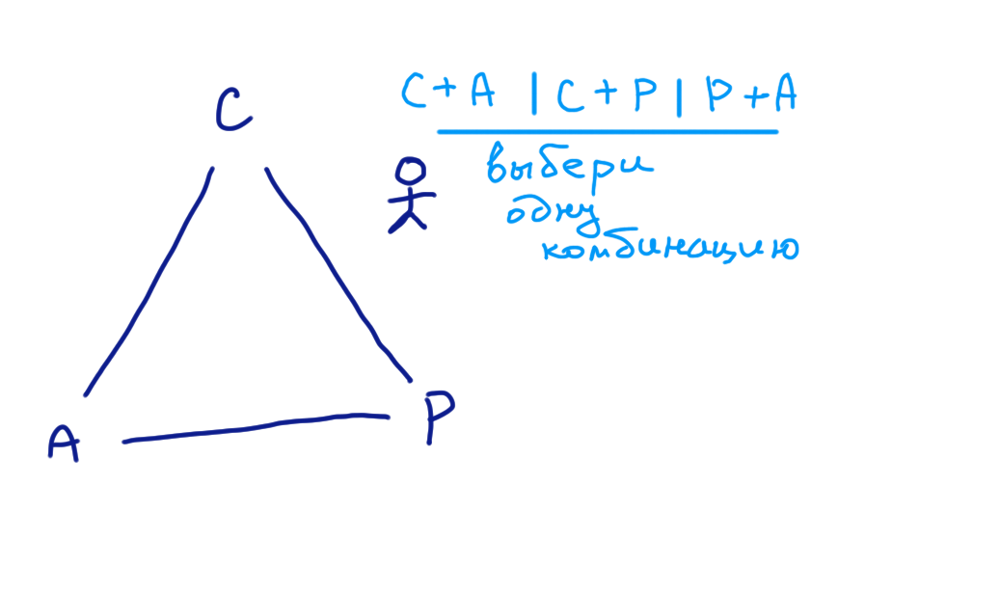

Базы данных: введение, часть третья
Илья Тетерин
2011-09-28
(use arrow keys or PgUp/PgDown to move slides)
Flashback:
- бумажная телефонная книга, как база данных
- CRUD операции
- хранение данных в памяти
- UI к нашей базе (console / http / socket)
- partition/sharding
- journal операций
- master-slave replication
- key-value store
- document oriented db
Изменяемое состояние
- фазированные (каталог раз в год)
- on-fly изменения (надо прямо сейчас - биржа)
- промежуточные варианты
nb: read-only данные - легко масштабируются под нагрузку
Транзакция в реальной жизни
- в идеале - мгновенный переход из состояния "до" в состояние "после"
- фокус с переодеванием человека на модном шоу
- никто не должен видеть процесс перехода
(как произошло)
- state machine - машина состояний
- связанные аккаунты - с одного списали, на другой занесли
несколько действий за один заход
- а как же наши журналы, индексы, счетчики етс?
транзакция сложнее
- математика: y = f(x) - мгновенно
- атомарность == неделимое
- компьютер
- атомарность i++
- нет зрителей - нет проблем, synchronize
- закрытый мир + stop the world
ACID / АСИД
- Atomicity
Атомарность
- Consistency
Согласованность / Корректность
- Isolation
Изолированность / Невидимость
- Durability
Долговечность / Устойчивость
acid (eng) - кислятина
© http://lingvo.yandex.ru/acid/
Атомарность
- либо случилось, либо нет
- rollback
- undo-log
Согласованность
- внутренне ( индексы, формат етс )
- внешне
- а как описать внешние ограничения на стороне базы?
- вычислительные ресурсы
- связи внутри и вовне
Изолированность
- свой маленький мир
- я вижу свои изменения
- я не вижу изменений соседа
- начало времен
- иллюзия последовательности событий
- ... уровни изоляции (подводная лодка)
Isolation levels / уровни изоляции
- 1. Serializable
иллюзия последовательности
- 2. Repeatable reads / phantom reads
набор рядов меняется
- 3. Read committed / non-repeatable read
значение меняется
- 4. Read uncommitted / dirty reads
они откатились, а мы увидели
- SCN / system change number / "время" базы
Долговечность / Устойчивость
- я сказал "ок, значит ок"
- сначала в журнал, только потом ok
- свет выключили
- винт обсыпался
- в огне не горит, в воде не тонет
- журнал регистрации операций с недвижимостью - с печатью, пронумерованные, прошитые
Достижимость ACID в кластере
- атомарность
- согласованность
- изолированность
- устойчивость
- nb: многоядерный компьютер - тоже страдает от этих проблем
CAP теорема
Brewer's CAP Theorem
by Julian Browne
Eventually Consistent - Revisited
Talk: Availability & Consistency
by Werner Vogels, CTO Amazon
CAP
- Consistency
все показания сходятся
- Availability
всегда отвечает
- Partition (tolerance)
один за всех
картинка - треугольник C-A-P

CAP сказка из жизни
Исходно:
A plain english introduction to CAP Theorem
by Kaushik Sathupadi
CAP сказка: 1
- Идея: сервис - Позвони, напомню!
- моя записная книжка + key/value + мой телефон как API
- Растем, не успеваю ...
- Подключаю жену в параллель (единый входной номер ака balancer)
- Первый ой: ... звонил Джон, я ему сказал, что встреч нет, а ...
- анализ: Джон вчера попал не ко мне, а к жене
- Смотрим записнушку жены - ага, челу не повезло
- система not consistent (неоднородна?) - показания не сходятся
CAP сказка: 2
- надо что-то делать ...
- заводим протокол
- до того, как сказать "Спасибо, до связи!" мы записываем данные друг другу
- когда получаем звонок - все хорошо, все данные есть у всех
- трабл - на время "записать" - всем надо будет оторваться и потормозить,
да не проблема - все равно большую часть все ищут информацию
- ой 2:а что, если кто-то недоступен (телефон, заболел, в туалет отошел)?
- система unavailable (недоступна?) - зависла и молчит "подождите, я щас засинкаюсь"
CAP сказка: 3
- надо что-то делать ...
- нам надо Consistent + Available
- идея: если чел рядом - мы ему говорим, а если нет - email пошлем, он утром прочитает
- и наступило у нас долгое счастье
- проблема ... вы думали что почта не ходит?
- не-а ... другая потеря коммуникаций - жена разговаривать не хочет :)
- произошло разделение сети (partition) и наши апдейты "не доходят".
- не смотря на наши усилия система не может жить с C + A + P
- заводим бегунок, который бегает туда-сюда, апдейты носит
- eventually (когда-ни-будь!) наши базы будут синхронизированы
- ... если только ...
- eventually consistent / NoSQL
BASE
- Basically Available
- Soft-state
- Eventually-consistent
BASE: An Acid Alternative
by Dan Pritchett
- в принципе доступна
- в принципе знаем состояние
- когда-ни-будь сойдется
Вопросы?